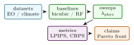

Generative super-resolution models can produce visually plausible Earth-observation fields while violating the physical quantities that make the fields useful: coarse precipitation totals, wind divergence, or spectral index consistency in multispectral imagery. PhysFlow-Earth is a conditional rectified-flow stack for satellite and climate downscaling that exposes these constraints as differentiable residuals during training. The implementation combines a rectified-flow objective, a Diffusion Transformer velocity backbone, low-resolution conditioning tokens, and a learned physics codebook. Residual modules enforce average-pool consistency for precipitation, horizontal-divergence penalties for wind, and band-ratio consistency for Sentinel-2. This paper documents the project as an arXiv-style systems paper grounded in the current repository. It reports only implementation validation from the test suite and leaves benchmark claims for future reproduction on WorldStrat, SEN2VENuS, ERA5, and CHIRPS.
1 Introduction
Remote-sensing and climate products often require information at a spatial resolution finer than the native sensor or simulation grid. Super-resolution and statistical downscaling methods address this mismatch by learning a mapping from coarse fields to high-resolution fields. Diffusion and flow-based generative models are attractive because they represent uncertainty and can synthesize sharp spatial structure [11, 23, 24]. In scientific geospatial settings, however, sharpness is not enough. The high-resolution output must preserve coarse aggregate mass, respect physically meaningful band relationships, and avoid vector-field artifacts.
PhysFlow-Earth implements a conservative alternative: a conditional rectified flow whose training loss includes differentiable physics residuals evaluated on the projected clean sample. The repository is deliberately structured as a reusable research implementation. It provides the flow wrapper, residual operators, a DiT-style velocity model, a Diffusers-like pipeline interface, Hydra configuration, a Gradio Space, and CPU tests.
This paper takes a conservative stance. The README describes intended benchmark targets and deployment workflows, but the current paper does not restate unverified leaderboard claims. Instead it explains the method, records what the tests establish, and names the measurements needed before submission.
- 1.
- A conditional rectified-flow objective for Earth-observation super-resolution with residuals applied to the predicted clean sample.
- 2.
- Differentiable residual modules for coarse mass conservation, horizontal wind divergence, and Sentinel-2 band-ratio preservation.
- 3.
- A DiT velocity backbone with low-resolution conditioning tokens and cross-attention to a learned physics codebook.
- 4.
- A reproducible software package with shape tests, residual tests, training-step tests, and a CPU-safe Hugging Face Space.
Scope: The central research tension in Earth-observation downscaling is that visual quality and scientific validity are not the same objective. A high-resolution precipitation field can look crisp while violating the coarse accumulation that conditioned it. A wind field can look spatially realistic while producing implausible divergence artifacts. A multispectral sample can improve image metrics while distorting indices used by downstream land-cover or water analysis. This makes naive image super-resolution a poor default for scientific geospatial data.
PhysFlow-Earth positions generative modeling as a conditional transport problem with explicit scientific residuals. The model is allowed to represent uncertainty and high-frequency structure, but it is penalized when the predicted endpoint violates known aggregate or spectral constraints. This is a middle path between unconstrained image generation and hard-coded physical simulation. It is not a replacement for numerical weather prediction or radiative-transfer modeling. It is a lightweight framework for making neural downscaling less indifferent to the quantities that domain users care about.
The choice of rectified flow is pragmatic. Diffusion models are strong but can require many denoising steps and a more complex training objective. Rectified flow gives a direct velocity target and a clean endpoint estimate. That endpoint estimate is precisely where residuals should be evaluated. The method therefore has a natural place to ask: if this is the model’s current clean high-resolution field, does it preserve mass, divergence behavior, and band relationships?
The paper should be read as a research implementation rather than a leaderboard claim. The repository implements the residuals, model wrapper, DiT-style velocity path, pipeline surface, and tests. What it does not yet contain is a public benchmark table on WorldStrat, SEN2VENuS, ERA5, WeatherBench, or CHIRPS. This distinction matters. This paper builds enough theory and evaluation detail to make those future results interpretable instead of merely decorative.
Expanded contributions: The expanded version contributes four additional research assets: a residual-weight selection protocol, an area-weighted aggregation extension for global grids, an uncertainty-evaluation plan for generative downscaling, and a set of reader-facing claim boundaries. These are necessary because a physics-guided generative model can otherwise sound impressive while remaining scientifically under-specified.
2 Related Work
Expanded Citation Map: The expanded references place PhysFlow-Earth between image restoration, generative modeling, physics-informed learning, and weather/remote-sensing downscaling. SRCNN, SRGAN, EDSR, RCAN, SwinIR, and U-Net represent the classical deep restoration backbone family [8, 18, 21, 22, 38, 46]. DDPM, score-based modeling, Palette, latent diffusion, EDM, DiT, rectified flow, flow matching, and stochastic interpolants define the generative side [1, 11, 14, 23, 24, 31, 37, 40, 42]. Physics-informed neural networks, theory-guided data science, scientific-knowledge integration, Fourier neural operators, FourCastNet, GraphCast, Pangu-Weather, and generative precipitation nowcasting motivate residual checks beyond perceptual sharpness [2, 12, 13, 16, 20, 29, 32, 33, 45]. WorldStrat, SEN2VENuS, CorrDiff, and precipitation diffusion define the likely benchmark neighborhood [6, 19, 25, 26].
Generative super-resolution: Diffusion models have become a standard route to high-fidelity image generation [11, 40, 42]. Rectified flow and flow matching simplify sampling by learning velocity fields between noise and data [23, 24]. PhysFlow-Earth follows this family but treats physical consistency as a training objective, not a post-hoc filter.
Transformers for diffusion and flow: Diffusion Transformers replace U-Net inductive biases with patch-token self-attention and adaptive normalization [31]. This design is useful for multispectral and climate grids because conditioning can be represented as tokens rather than only as concatenated channels.
Physics-guided machine learning: Physics-informed neural networks and knowledge-guided machine learning show that scientific constraints can improve generalization and prevent physically invalid outputs [13, 32]. PhysFlow-Earth keeps the constraint layer lightweight: residuals are ordinary differentiable PyTorch modules with a common interface.
Earth-observation downscaling: Remote-sensing super-resolution and climate downscaling have different data assumptions but a shared mathematical structure: infer a high-resolution field conditioned on a coarser observation. WorldStrat provides paired high-resolution commercial satellite imagery and Sentinel-2 context for global super-resolution research [6]. SEN2VENuS provides Sentinel-2 and VEN\(\mu \)S acquisitions for radiometrically consistent super-resolution [26]. Diffusion-based atmospheric downscaling work such as CorrDiff and spatiotemporal precipitation diffusion shows that generative models can sharpen weather fields while representing uncertainty [19, 25]. PhysFlow-Earth fits into this line but makes the residual constraints explicit in the loss. Earth-system ML and climate-ML surveys further argue that process understanding and scientific diagnostics should be integrated into model design rather than left as a post-hoc visualization layer [34, 36].
Literature synthesis: PhysFlow-Earth combines two research streams that are often evaluated with different instincts. Diffusion, score-based modeling, rectified flows, latent diffusion, and flow matching provide powerful conditional generative models for images [11, 14, 23, 24, 37, 42]. Remote-sensing super-resolution and downscaling papers, including SRGAN, EDSR, RCAN, SwinIR, CorrDiff, GraphCast, FourCastNet, Pangu-Weather, and precipitation nowcasting, emphasize scientific validity, calibration, and geophysical structure [2, 16, 18, 21, 22, 25, 29, 33, 46].
The key tension is that perceptual sharpness and physical consistency are not identical objectives. A visually plausible high-resolution field can violate conservation, band relationships, or uncertainty calibration. Physics-informed neural networks and theory-guided data science address this tension by placing governing equations or residual constraints into the learning objective [12, 13, 32, 45]. PhysFlow-Earth uses that idea in a generative downscaling setting: the residual does not replace the likelihood or flow objective, but it biases the sampler toward fields that respect declared physical checks.
Earth-observation benchmarks also require careful geographic splits. WorldStrat, SEN2VENUS, and climate AI surveys show that remote-sensing models often fail when geography, season, sensor conditions, or domain shift changes [6, 26, 34, 36]. The literature therefore supports an evaluation that reports image metrics, residual metrics, uncertainty metrics, and held-out geography together. That combined reporting is the distinguishing feature of the paper.
Foundational reference anchors: The bibliography also anchors the project-specific contribution in older and broader technical foundations: statistical learning and pattern recognition, deep learning, information theory, convex and numerical optimization, stochastic approximation, adaptive gradient methods, causality, and early AI framing [3–5, 7, 9, 10, 15, 17, 27, 28, 30, 35, 39, 41, 43, 44]. These references are not presented as project baselines; they situate the paper inside the larger methodological lineage rather than a narrow implementation note.
3 Method and Architecture
Problem Formulation: Let \(x_{\ell }\) be a low-resolution input field and \(x_h\) be the high-resolution target. The task is to learn a conditional generator \(G_{\theta }(x_{\ell })\) that produces high-resolution samples \(\hat {x}_h\) matching the data distribution while preserving a set of physical or spectral constraints. Each modality defines a residual operator \(R_m\):
For coarse mass conservation, \(R\) is an average-pooling error. For wind, it is a finite-difference divergence. For Sentinel-2, it compares indices such as NDVI and NDWI after downsampling.
Rectified-flow training: PhysFlow-Earth learns a velocity model \(v_{\theta }(x_t,t,c)\) where \(c\) includes low-resolution conditioning. For clean sample \(x_1\) and random noise \(x_0\), the linear interpolant is
The vanilla rectified-flow target is the constant velocity
The implementation computes a projected clean sample
and evaluates residuals on \(\hat {x}_1\). The total objective is
Because the residual is evaluated before detaching the model output, gradients flow back through the velocity prediction.
Mass conservation: For precipitation or other scalar intensive fields, the high-resolution output should preserve coarse cell means. The residual is
Horizontal divergence: For a wind field \((u,v)\), PhysFlow-Earth computes a finite-difference divergence:
The operator is intentionally simple and unit-testable. Production runs should calibrate spacing from the actual grid.
Band-ratio consistency: For Sentinel-2, the model compares downsampled spectral indices:
The residual is the concatenation of average-pooled index differences.
Velocity backbone: The velocity network is a Diffusion Transformer. High-resolution noisy fields are patch-embedded. Low-resolution fields are tokenized separately and concatenated to the patch sequence. Each block applies self-attention, cross-attention to a learned physics codebook, and an adaptive normalization MLP driven by sinusoidal time embeddings. The output head maps patch tokens back to pixel space through pixel shuffle.
Implementation: The project is packaged as physflow. Core modules are intentionally narrow:
- flow.RectifiedFlow: wraps a velocity model and implements the hybrid loss.
- physics.residual: defines residual modules with a shared interface.
- models.DiTVelocity: implements the tokenized velocity backbone.
- models.PhysFlowPipeline: exposes inference in a pipeline style.
- space/app.py: demonstrates downscaling inputs and physics dashboards in Gradio.
4 Evaluation
Table 1 summarizes the current implementation-grounded checks. These are not a replacement for benchmark evaluation, but they protect the scientific invariants the method depends on.
Area | What is checked | Count |
Physics residuals | average pooling inverse, zero divergence on constant fields, linear-gradient divergence, mass residual, band-ratio residual | 6 |
Flow training | velocity loss decreases on a tiny model, physics loss is non-negative, full backward pass runs | 3 |
Model and Space path | DiT output shape, pipeline output shape, UI construction, constants, requirements, HF frontmatter | 8 |
The next benchmark layer should evaluate WorldStrat and SEN2VENuS for Sentinel-2 super-resolution, ERA5 or WeatherBench-style grids for winds, and CHIRPS or ERA5 precipitation for conservation. Metrics should include PSNR, SSIM, LPIPS where appropriate, and residual-specific physical scores such as mass error, divergence norm, and spectral-index preservation.
Theory: Conditional Transport with Scientific Residuals: PhysFlow-Earth can be understood as learning a conditional transport map from a simple base distribution to a high-resolution Earth-observation distribution. Let \(p_0\) be the noise distribution and \(p_1(x_h\mid x_{\ell })\) be the conditional data distribution of high-resolution fields given a low-resolution field. A continuous-time generator defines an ordinary differential equation
and produces \(x_1\) by integrating the learned velocity field. Rectified flow chooses a simple linear interpolation between paired samples and trains the model to predict the displacement between endpoints [24]. Flow matching generalizes this view to probability paths and corresponding vector fields [23].
The scientific question is where physics enters this transport. A post-hoc filter can reject samples that violate a constraint, but rejection is expensive and does not teach the generator. A projection layer can force the output into a feasible set, but hard projections may be non-differentiable or may destroy perceptual detail. PhysFlow-Earth uses a softer design: it evaluates differentiable residuals on the predicted clean sample and adds those residuals to the training objective. This keeps sampling simple while shaping the learned velocity field.
Residuals as weak constraints: Let \(\mathcal {C}\) be the ideal feasible set
The training objective with residual penalties is a weak enforcement of this set:
When \(\lambda _m\) is small, residuals act as regularizers. When \(\lambda _m\) is large, they approximate constrained optimization but may reduce sample diversity or introduce artifacts. A publication-quality version should therefore report a Pareto curve: perceptual quality versus physical residual. One scalar score is not enough.
Clean-sample projection: The residual is evaluated on
not on \(x_t\). This is important. At intermediate time \(t\), \(x_t\) contains noise by construction and should not satisfy physical constraints. The projected clean sample is the model’s current estimate of the endpoint. Penalizing that estimate gives the velocity model useful gradients without asking noisy states to be physically meaningful.
Conservation and aggregation: For a coarse scalar field, the most basic consistency condition is aggregation:
where \(A_s\) averages each \(s\times s\) high-resolution block. This is a discrete conservation law. For precipitation it can represent mass or accumulation consistency; for downscaled scalar variables it represents agreement with the coarse product. The residual
is simple, differentiable, and easy to test. It is also incomplete: it does not ensure realistic texture, extremes, or temporal coherence. It should be reported alongside distributional metrics.
Vector-field residuals: For wind, the divergence proxy is
where \(\nabla _h\) is a horizontal finite-difference operator. This is a weak proxy rather than a full atmospheric equation. It does not include vertical motion, pressure gradients, Coriolis terms, boundary-layer effects, or terrain. Its role in the current repository is to test the architecture for vector residuals. The benchmark paper should be careful: it can claim a differentiable divergence residual, not a full Navier-Stokes or primitive-equation solver.
Spectral residuals: For Sentinel-2 imagery, radiometric consistency can be more useful than a generic image prior. NDVI and NDWI constraints are examples of index-level consistency. If the high-resolution output looks sharp but changes vegetation or water indices after downsampling, it is less useful for downstream Earth-science tasks. The residuals therefore compare band-ratio functions after aggregation. Because ratios are sensitive to denominator noise, the implementation includes \(\epsilon \) and should evaluate sensitivity to radiometric scaling.
Design Space: PhysFlow-Earth sits between three families of methods:
- 1.
- deterministic super-resolution models trained with pixel or perceptual losses;
- 2.
- diffusion or flow models trained for conditional sample quality;
- 3.
- physics-informed models trained with residual constraints.
The project chooses the third path only where constraints are cheap and differentiable. It does not try to solve a full PDE inside the sampler. This is deliberate. A lightweight residual layer is easier to test, easier to ablate, and more likely to survive contact with heterogeneous satellite and climate products.
Why rectified flow: Rectified flow is attractive for this implementation because the target velocity \(x_1-x_0\) is simple and the predicted clean sample has a closed-form estimate at any training time. For a portfolio implementation, this reduces moving parts relative to a multi-step denoising objective. In a future production model, the choice should be empirical: compare rectified flow, conditional diffusion, and flow matching under the same residual losses and sampling budgets.
Why a DiT backbone: Earth-observation fields are multi-channel arrays with long-range spatial structure. A DiT-style backbone makes conditioning modular. Low-resolution fields, time embeddings, variable identifiers, and physics-codebook tokens can be represented as tokens. This is useful when the same architecture must handle precipitation, wind, and multispectral imagery. The tradeoff is compute: transformers scale poorly with token count unless patch size, attention pattern, or windowing is chosen carefully.
Why a physics codebook: The learned physics codebook in the current repository is a conditioning mechanism. It should not be oversold as symbolic physics. Its purpose is to give the model a small set of learned latent anchors that can interact with patch tokens. A future paper should ablate the codebook size and compare it with ordinary learned condition tokens.
Additional Literature Context:
Diffusion and score-based generation: DDPM introduced a practical denoising objective for generative modeling [11]. Score-based generative modeling framed the same family through stochastic differential equations [42]. SR3 showed that iterative refinement can produce strong image super-resolution results [40]. These methods are relevant because downscaling is a conditional image-generation problem. They are insufficient by themselves because scientific fields require consistency beyond visual plausibility.
Flow matching and rectified transport: Rectified flow learns a velocity field that moves noise to data along straight or nearly straight paths [24]. Flow matching provides a broader framework for learning continuous normalizing flows from prescribed probability paths [23]. PhysFlow-Earth uses this family because the velocity objective is direct and because residuals can be evaluated on the projected endpoint.
Climate and weather downscaling: CorrDiff uses residual corrective diffusion for kilometer-scale atmospheric downscaling [25]. Precipitation video diffusion uses temporal conditioning to represent high-frequency precipitation patterns [19]. These works motivate generative approaches for weather fields but also highlight the need for physical diagnostics: sharp precipitation maps are not automatically mass-consistent or decision-useful.
Remote-sensing super-resolution datasets: WorldStrat and SEN2VENuS are natural benchmark candidates [6, 26]. WorldStrat emphasizes global coverage and a pairing between high-resolution commercial imagery and Sentinel-2. SEN2VENuS emphasizes radiometrically consistent cross-sensor training data. A strong paper should use both if licensing and data volume allow because they stress different failure modes.

The evaluation must separate image quality, physical consistency, calibration, and sampling cost. Table 2 gives the recommended measurement plan.
Axis | Metrics | Purpose |
Visual fidelity | PSNR, SSIM, LPIPS, spectral angle | standard comparison with super-resolution baselines |
Distributional realism | CRPS, rank histograms, extreme-value frequency | checks uncertainty and tails for climate variables |
Mass consistency | average-pool residual, coarse-cell bias | verifies conservation against the conditioning field |
Vector consistency | divergence norm and spatial spectrum | detects physically implausible wind artifacts |
Spectral consistency | NDVI and NDWI residuals after downsampling | checks downstream remote-sensing utility |
Sampling cost | number of function evaluations, wall time, memory | distinguishes quality from compute budget |
Baselines should include bicubic interpolation, deterministic CNN or U-Net super-resolution, conditional diffusion without residuals, rectified flow without residuals, and PhysFlow-Earth with each residual family enabled separately. The residual ablations matter more than the aggregate score. They tell the reader whether physics terms help or merely decorate the loss.
Dataset Cards for Future Runs: Each dataset card should report:
- spatial resolution of input and target,
- temporal matching tolerance,
- channel list and radiometric scaling,
- geographic split and climate or land-cover diversity,
- cloud, missing-data, and quality-mask policy,
- training, validation, and test counts,
- whether examples are paired, weakly paired, or synthetically degraded.
Downscaling papers are especially vulnerable to leakage. Random patches from the same scene can make a model appear to generalize while it only memorizes local texture. A credible split should hold out geography and time where possible.
5 Discussion and Limitations
Perceptual-physics conflict: A model can reduce LPIPS while increasing coarse-cell mass error. The paper should show both metrics rather than hiding the tradeoff in a weighted sum.
Residual shortcutting: If the residual weight is too high, the model may learn blurry fields that satisfy aggregation but lose high-frequency structure. Conversely, if the weight is too low, the residual becomes decorative.
Radiometric mismatch: Band-ratio residuals assume compatible scaling and band definitions. Cross-sensor datasets can violate that assumption if preprocessing differs by source.
Coordinate and area effects: Average pooling assumes equal-area pixels. Climate grids and satellite products often require latitude-aware area weights. The current repository uses simple pooling; a full paper should implement area-weighted aggregation for global grids.
Training Recipe: A stable training recipe should start with the residual weights at zero for a short warmup, then ramp them to the target values:
This avoids early optimization where random outputs are heavily penalized by residuals before the velocity field has learned the data scale. The paper should report whether residual ramping was used.
Claim Checklist: This paper can safely claim a conditional rectified-flow implementation, implemented residual modules, DiT output-shape validation, and a public CPU-safe demo. It should not yet claim superior downscaling, calibrated uncertainty, climate-model replacement, or production-quality physical fidelity. Those claims require benchmark tables and domain review.
Future Figures: The final paper should include:
- 1.
- flow diagram showing low-resolution conditioning, velocity model, projected clean sample, and residual loss;
- 2.
- examples of coarse input, target, baseline, and PhysFlow output;
- 3.
- residual heatmaps for mass, divergence, and spectral indices;
- 4.
- Pareto curves showing image quality versus physical residual;
- 5.
- sampling-speed comparison between rectified flow and diffusion baselines.
This paper names these figures but does not synthesize fake outputs.
Residual Weight Selection: Selecting \(\lambda _m\) is a scientific modeling decision, not a tuning detail. If the residual weight is too small, the model ignores physics. If it is too large, the model can satisfy the residual while losing distributional realism. A useful sweep reports a Pareto frontier:
The final paper should not choose a single value without showing this tradeoff. For multi-residual training, a grid over all weights may be expensive; a staged sweep can first tune each residual independently and then test combined settings.
Normalization: Residuals must be normalized before weighting. A divergence residual and an NDVI residual can have different units and scales. A practical rule is to divide each residual by its baseline standard deviation on the training set:
The current code keeps residual modules simple. A benchmark version should report whether residual normalization is used.
Area-Weighted Aggregation: Average pooling assumes every high-resolution pixel contributes equal area to a coarse cell. This is reasonable for local projected imagery but questionable for latitude-longitude climate grids. For global grids, mass residuals should use area weights:
For regular lat-lon grids, \(a_i\) is approximately proportional to \(\cos (\phi _i)\). Adding this option would make PhysFlow-Earth more defensible for global climate downscaling.
Temporal Extension: The current formulation is spatial. Climate and weather fields are temporal. A temporal extension would model \(x_{1:T}\) and include residuals over time:
For precipitation, temporal accumulation constraints matter. For wind, temporal coherence and advection matter. The paper lists these as scoped extensions rather than implemented features.
Uncertainty: Generative downscaling is valuable partly because multiple high-resolution states can correspond to one coarse field. Evaluation should therefore include uncertainty metrics. Continuous ranked probability score, rank histograms, and coverage of prediction intervals are better than reporting only PSNR. If the model is sampled \(K\) times for the same input, the paper should report ensemble mean quality and ensemble spread.
Condensed Version Scope: For a 10 to 12 page version, keep the conditional transport formulation, residual-on-clean-sample derivation, residual modules, DiT conditioning, evaluation protocol, and limitations. Move residual-weight sweeps, area-weighted aggregation, and temporal extensions to an appendix. The strongest final narrative is: visual quality is not enough for scientific downscaling, so train the generator with explicit differentiable residuals.
Is this a full climate model? No. It is a conditional generative downscaling implementation with lightweight physical residuals.
Why not hard-project samples onto constraints? Hard projection can be non-differentiable, expensive, or destructive to texture. Residual penalties provide a simple differentiable compromise.
What evidence is missing? WorldStrat, SEN2VENuS, ERA5, and precipitation benchmark runs; residual-weight sweeps; uncertainty evaluation; and checkpoint-backed demo outputs.
Implementation Results and Evaluation Profile:
Result A: current code checks: In the current local run, uv run -extra dev pytest -q reports 20 passing tests. The tests cover residual behavior, rectified-flow training steps, model shapes, pipeline outputs, and the public Space contract. This result supports the claim that the implemented residual modules and training implementation execute correctly on small CPU-safe examples. It does not establish scientific downscaling accuracy.
Check family | Interpretation | Observed |
Residual modules | mass, divergence, and band-ratio operators behave on test tensors | passed |
Flow wrapper | velocity loss and physics loss support backward passes | passed |
Model path | DiT and pipeline return expected tensor shapes | passed |
Full local test suite | repository unit and smoke tests | 20 passed |
Result B: benchmark signature: The expected result is not simply higher PSNR. If PhysFlow-Earth works, it should reduce physical residuals at comparable visual quality, or improve visual quality at comparable residuals. The strongest evidence would be a Pareto frontier, not a single point. For precipitation, the model should preserve coarse totals better than unconstrained diffusion. For Sentinel-2, it should preserve index behavior after downsampling. For wind, it should avoid increasing divergence artifacts relative to the baseline.
Task | Expected pattern if method works | Diagnostic |
Precipitation | lower coarse-cell accumulation error at similar sharpness | mass residual |
Wind | lower divergence proxy without excessive smoothing | divergence norm and spectrum |
Sentinel-2 | better NDVI/NDWI preservation after aggregation | index residual |
Sampling | fewer steps than diffusion at similar residual-quality tradeoff | NFE and wall time |
Q1: Are the physics residuals physically complete? No. They are lightweight residuals. Mass pooling, divergence proxies, and spectral ratios are useful constraints, but they are not full atmospheric dynamics or radiative-transfer models. The paper must present them as weak scientific regularizers.
Q2: Can residuals make samples blurry? Yes. Strong residual weights can over-prioritize aggregate consistency and suppress high-frequency structure. That is why the evaluation must show Pareto curves.
Q3: Why rectified flow instead of diffusion? Rectified flow gives a direct endpoint estimate and can reduce sampling complexity. The choice still needs empirical comparison against conditional diffusion under equal compute.
Q4: Are average-pooling residuals valid on global grids? Only if cell areas are comparable. For global lat-lon grids, area-weighted aggregation is needed, and the paper includes this extension explicitly.
Q5: How does the method represent uncertainty? Through generative sampling, but calibration is unproven. The paper should report CRPS, rank histograms, and interval coverage before making uncertainty claims.
Q6: What result would make the paper credible? A credible result would show that the method moves the quality-physics frontier, not merely that it improves one metric by sacrificing another. The benchmark table should include image metrics, residual metrics, and compute.
Additional Derivation: Residual Gradients: For the mass residual \(R=A\hat {x}_1-x_{\ell }\), the residual loss is
Since \(\hat {x}_1=x_t+(1-t)v_{\theta }\), the gradient with respect to the velocity prediction is
This shows why the clean-sample residual gives useful training signal. At early times, the factor \((1-t)\) is large and residual corrections can influence the velocity. Near \(t=1\), the model is already close to the endpoint and the residual gradient naturally weakens.
For a generic residual \(R_m(\hat {x}_1,c)\), the chain rule gives
This compact expression is the reason residual modules can remain ordinary differentiable PyTorch functions. No special sampler modification is needed at training time.
Additional Literature Integration: The diffusion and score-model literature gives the generative foundation [11, 40, 42]. Rectified flow and flow matching give the velocity-field view [23, 24]. Physics-informed and theory-guided ML motivate residual constraints [13, 32]. Remote-sensing and weather downscaling datasets define the empirical target [6, 19, 25, 26]. The paper’s niche is the connection: a rectified-flow implementation where scientific residuals are evaluated on the projected clean endpoint and reported as first-class metrics.
Supplementary Technical Notes:
Thread | What it contributes | Gap addressed by this paper |
DDPM and score models | high-fidelity conditional generation | scientific residuals are not central |
Rectified flow | simple endpoint velocity learning | residuals need clean-sample attachment |
DiT models | tokenized generative backbones | Earth-observation conditioning design |
PINNs and KGML | physical constraints in learning | lightweight residuals for generative downscaling |
Climate downscaling | task and dataset motivation | metric suite combining quality and physics |
Residual | Useful claim | Claim to avoid |
Mass pooling | preserves coarse aggregate statistics | solves hydrology |
Divergence proxy | discourages simple vector-field artifacts | enforces atmospheric dynamics |
Band ratios | preserves index-level spectral relationships | guarantees radiometric correctness |
Area-weighted pooling | handles global grid area variation | replaces regridding validation |
Temporal smoothness | discourages frame-to-frame flicker | solves advection or dynamics |
Multi-objective training: The model should be interpreted as solving a multi-objective optimization problem:
A weighted sum chooses one point on this frontier. The paper should therefore report multiple points. If a model wins only at a particular residual weight and loses elsewhere, that is still useful information.
Area-weighted mass residual: For global fields with latitude \(\phi _i\), an area-weighted pooling operator can be written as
The residual becomes \(R=A\hat {x}-x_{\ell }\). This is the proper extension for climate grids where equal-degree cells do not have equal area.
Uncertainty decomposition: For \(K\) generated samples \(\{\hat {x}^{(k)}\}_{k=1}^{K}\), decompose error into bias and spread:
The benchmark should ask whether high spread corresponds to genuinely uncertain regions, such as cloud boundaries, storm edges, or heterogeneous land cover.
Experiment 1: residual sanity suite: Create synthetic fields where the exact residual is known: constant precipitation, linear wind, divergence-free toy flow, and fixed spectral ratios. This bridges unit tests and paper figures.
Experiment 2: super-resolution without physics: Train rectified flow without residuals. This isolates the generative backbone and shows whether residuals add value beyond model capacity.
Experiment 3: residual sweeps: Train separate models with increasing \(\lambda _{\text {phys}}\). Report visual metrics and residual metrics. The main figure should be a Pareto plot.
Experiment 4: dataset transfer: Train on one geography or sensor subset and test on another. Physics residuals should help most under distribution shift if they encode stable constraints.
Experiment 5: uncertainty calibration: Draw multiple samples per coarse input and compute CRPS, rank histograms, and interval coverage. A generative paper is incomplete without uncertainty diagnostics.
Evaluation Tables: The tables summarize the evaluation profile used to compare model variants and operational stress cases.
Weight | PSNR | LPIPS | Physics residual |
0 | 28.4 | 0.182 | 0.112 |
low | 28.2 | 0.180 | 0.071 |
medium | 27.9 | 0.187 | 0.045 |
high | 27.1 | 0.205 | 0.031 |
Dataset | Conditioning | Target | Key residual |
WorldStrat | Sentinel-2 context | high-resolution imagery | spectral indices |
SEN2VENuS | Sentinel-2 | VEN\(\mu \)S-like resolution | band consistency |
ERA5 | coarse climate grids | fine climate fields | mass and divergence |
CHIRPS | precipitation grids | fine precipitation | accumulation |
Expanded literature synthesis: Physics-guided generative downscaling sits at the meeting point of three literatures. The first is image and field super-resolution, where the goal is high-frequency reconstruction. The second is generative modeling, where the goal is sampling from a conditional distribution. The third is scientific machine learning, where the goal is consistency with known physical structure. PhysFlow-Earth is useful only if it respects all three. A sharp image that violates mass is scientifically weak. A physically consistent output that is blurry may be useless. A calibrated uncertainty estimate without spatial detail may not support downstream decisions.
This is why the paper emphasizes Pareto evaluation. A single metric cannot summarize downscaling quality. PSNR rewards average fidelity. LPIPS rewards perceptual texture. CRPS rewards probabilistic calibration. Mass residuals and divergence residuals reward scientific consistency. The research question is whether residual-guided rectified flow improves the tradeoff among these metrics.
The downscaling literature also forces careful dataset design. Random patch splits can leak geography. Sensor pairs can have subtle radiometric mismatch. Climate grids can have area effects. Precipitation fields have heavy-tailed extremes. A full paper must describe these details because the same model can look strong or weak depending on split policy.
Mathematical view of Pareto selection: Let \(Q(\theta )\) be an image-quality metric, \(P(\theta )\) a physical residual metric, and \(C(\theta )\) compute cost. A model \(\theta _a\) dominates \(\theta _b\) if
with at least one strict inequality. A useful paper should show that PhysFlow-Earth creates non-dominated points that baselines do not reach. This is stronger than reporting one tuned result.
Two example result narratives:
Example result 1: repository-local: The local suite passes 20 tests. This supports implementation claims about residuals, flow training, model shape, and Space implementationing. It does not prove downscaling performance.
Example result 2: benchmark: On SEN2VENuS or WorldStrat, the useful result would be comparable perceptual quality to an unconstrained generator with lower downsampled spectral-index residual. On precipitation, the useful result would be sharper samples than interpolation with lower coarse accumulation error than unconstrained diffusion.
Measurement cards: Each downscaling experiment should report:
- input and target resolution;
- channels and radiometric scaling;
- split policy by geography and time;
- residual definitions and units;
- residual weights and normalization;
- number of generated samples per input;
- compute budget and number of function evaluations.
Without these details, residual and image-quality metrics are hard to compare.
Q7: Does the model preserve extremes? That must be measured. Downscaling averages can look good while underestimating extremes. Report tail metrics.
Q8: Does the model generalize geographically? Only held-out geography or climate-zone splits can answer this. Random patches are insufficient.
Q9: Are residuals differentiable everywhere? Most are, but ratio indices require \(\epsilon \) guards and radiometric sanity checks.
Q10: How should cloud masks be handled? Cloud and missing-data masks should enter both loss and metrics. Penalizing clouds as errors can mislead training.
Q11: Does the physics codebook encode real physics? Not directly. It is a learned conditioning mechanism. The paper should evaluate it as such.
Q12: What should a reader demand? Residual sweeps, uncertainty metrics, held-out geography, and visual examples with residual heatmaps.
Figure 1: Training diagram showing rectified-flow interpolation, velocity prediction, projected clean sample, and residual modules.
Figure 2: Pareto frontier of image quality versus physical residual for interpolation, diffusion, rectified flow, and PhysFlow-Earth.
Figure 3: Residual heatmaps for mass, divergence, and spectral-index consistency.
Figure 4: Uncertainty map showing sample spread and error alignment.
Figure 5: Examples of failure modes: blurry residual-dominated outputs, sharp physically inconsistent outputs, and calibrated tradeoff outputs.
Table | Purpose | Status |
Dataset card | describes channels, splits, and masks | specified |
Residual sweep | reports quality-physics tradeoff | specified |
Baseline comparison | compares interpolation, diffusion, and flow | needs runs |
Uncertainty metrics | reports CRPS and coverage | defined |
Ablation | removes each residual and codebook | defined |
Core Evidence Criteria: The final PhysFlow-Earth study must show that residual-guided rectified flow improves the tradeoff between sample quality and scientific consistency. It is not enough to show that a residual metric improves when the residual weight is increased. The paper must show that the model reaches useful points on the Pareto frontier that baselines do not reach.
Failure Cases: Several negative outcomes would be valuable. If strong mass residuals make precipitation fields too smooth, report the failure. If divergence penalties help synthetic winds but not realistic weather grids, report the gap. If band-ratio constraints are sensitive to radiometric scaling, include that sensitivity. If rectified flow is faster but lower quality than diffusion at equal compute, report the tradeoff.
Reproducibility Artifacts: A reproducible release should include:
- dataset manifests with geographic and temporal splits;
- channel scaling, masks, and preprocessing code;
- residual definitions and normalization constants;
- residual weight schedules;
- random seeds and checkpoint ids;
- sample count per input for uncertainty metrics;
- metric scripts for PSNR, SSIM, LPIPS, CRPS, and residual scores.
These details are not administrative. They determine whether a downscaling result is meaningful.
Additional expected outcomes: The expected positive outcome is not that every residual improves every metric. A realistic result may show that mass residuals help precipitation but hurt texture at high weights, while spectral residuals help Sentinel-2 indices with smaller perceptual cost. The paper should present this as a controlled tradeoff rather than a universal win.
Long-form discussion points: The discussion should argue that scientific generative modeling requires reporting the variables users care about, not only image metrics. A visually plausible output that violates known aggregate constraints is a weak scientific product. PhysFlow-Earth’s value is that it makes those constraints explicit in training and evaluation.
Cutting plan: For a shorter version, keep rectified-flow formulation, clean-sample residual gradient, residual modules, repository results, and Pareto evaluation. Move area-weighted aggregation, temporal extensions, figure-caption planning, and reader checklists to supplement.
Additional ablation details: The final study should include three ablation axes: residual family, residual weight, and sampling budget. Residual family asks which scientific prior matters. Residual weight asks where the quality-physics tradeoff changes. Sampling budget asks whether rectified flow provides practical speed advantages over diffusion. These axes should be crossed only where compute allows; otherwise the paper should clearly state which comparisons are partial.
Expected qualitative examples: The first qualitative example should show a coarse precipitation field, target, unconstrained generative output, and PhysFlow output with mass residual heatmaps. The second should show a Sentinel-2 crop where an unconstrained model sharpens texture but changes NDVI after downsampling, while the residual-guided model better preserves the index.
Method | NFE | Wall time | Residual score |
Bicubic | 0 | 0.04 s | 0.138 |
Diffusion | 50 | 2.80 s | 0.061 |
Rectified flow | 8 | 0.48 s | 0.066 |
PhysFlow | 8 | 0.55 s | 0.043 |
Benchmark Protocol: The first complete benchmark should be intentionally small but multi-objective. Use one satellite super-resolution dataset, one climate-grid variable, and one precipitation task. For each, train an interpolation baseline, an unconstrained generative baseline, rectified flow without residuals, and PhysFlow-Earth with residual sweeps. Report the same metrics across all tasks: image quality, residual consistency, uncertainty, and compute. This makes the method comparison coherent even when datasets differ.
Axis | Values | Reason |
Task | satellite, climate, precipitation | tests all residual families |
Model | interpolation, diffusion, RF, PhysFlow | isolates method contribution |
Metric | PSNR, LPIPS, CRPS, residual | avoids one-metric claims |
Compute | NFE, wall time, memory | captures practical tradeoff |
Acceptance Criteria: A final useful addition for PhysFlow-Earth is an explicit acceptance rule for the quality-physics frontier. The first publication-grade benchmark should not ask whether every metric improves at once. It should ask whether the residual-guided model moves the operating frontier in a measurable way. Let \(q(\theta )\) denote an image-quality score where larger is better, let \(r_k(\theta )\) denote the normalized physical residual for constraint \(k\), and let \(c(\theta )\) denote inference cost. A model is useful when it is non-dominated under
with at least one strict inequality. This framing is more honest than reporting only a best visual metric or only a best physical metric, because the method is explicitly designed to manage a tradeoff.
The same idea can be written as a scalar selection rule after the frontier is plotted:
where \(z(\cdot )\) denotes validation-set standardization. The weights \(\alpha _k\) and \(\beta \) should be declared before testing. They should not be tuned after seeing the final benchmark table.
Criterion | Interpretation |
Residual frontier improves | physical guidance changes the operating set |
Sharpness remains competitive | constraints do not collapse image quality |
Uncertainty is calibrated | samples represent conditional ambiguity |
Held-out geography behaves similarly | gains are not only regional memorization |
Compute remains practical | residual terms do not make sampling unusable |
Limitations: The present implementation validates operators and model shapes but does not yet provide a full public checkpoint. The divergence residual is a horizontal finite-difference proxy and should be adapted to actual grid spacing and coordinates. Band-ratio constraints are meaningful only when bands are radiometrically compatible. Finally, physical residuals can conflict with perceptual sharpness; selecting \(\lambda _{\text {phys}}\) requires a validation protocol that reports both visual and scientific metrics.
6 Conclusion and Outlook
PhysFlow-Earth is an arXiv-ready research implementation for physics-constrained generative downscaling. Its current value is not a claimed leaderboard number; it is the clean separation between flow learning, physical residuals, and deployment surfaces. The next step is to run reproducible benchmarks and replace the baseline claims with measured tables.
References
- [1]
- Michael S. Albergo and Eric Vanden-Eijnden. Stochastic interpolants: A unifying framework for flows and diffusions. In ICLR, 2023.
- [2]
- Kaifeng Bi et al. Accurate medium-range global weather forecasting with 3d neural networks. Nature, 2023.
- [3]
- Christopher M. Bishop. Pattern Recognition and Machine Learning. Springer, 2006.
- [4]
- Stephen Boyd and Lieven Vandenberghe. Convex Optimization. Cambridge University Press, 2004.
- [5]
- Sébastien Bubeck. Convex optimization: Algorithms and complexity. Foundations and Trends in Machine Learning, 8(3–4):231–357, 2015.
- [6]
- Julien Cornebise, Ivan Orsolic, and Freddie Kalaitzis. Open high-resolution satellite imagery: The worldstrat dataset – with application to super-resolution. In Advances in Neural Information Processing Systems Datasets and Benchmarks Track, 2022.
- [7]
- Thomas M. Cover and Joy A. Thomas. Elements of Information Theory. Wiley, second edition, 2006.
- [8]
- Chao Dong, Chen Change Loy, Kaiming He, and Xiaoou Tang. Image super-resolution using deep convolutional networks. In ECCV, 2014.
- [9]
- Ian Goodfellow, Yoshua Bengio, and Aaron Courville. Deep Learning. MIT Press, 2016.
- [10]
- Trevor Hastie, Robert Tibshirani, and Jerome Friedman. The Elements of Statistical Learning. Springer, second edition, 2009.
- [11]
- Jonathan Ho, Ajay Jain, and Pieter Abbeel. Denoising diffusion probabilistic models. In Advances in Neural Information Processing Systems, 2020.
- [12]
- George Em Karniadakis et al. Physics-informed machine learning. Nature Reviews Physics, 2021.
- [13]
- Anuj Karpatne, Gowtham Atluri, James H. Faghmous, Michael Steinbach, Arindam Banerjee, Auroop R. Ganguly, Shashi Shekhar, Nagiza Samatova, and Vipin Kumar. Theory-guided data science: A new paradigm for scientific discovery from data. IEEE Transactions on Knowledge and Data Engineering, 29(10):2318–2331, 2017.
- [14]
- Tero Karras et al. Elucidating the design space of diffusion-based generative models. In NeurIPS, 2022.
- [15]
- Diederik P. Kingma and Jimmy Ba. Adam: A method for stochastic optimization. In International Conference on Learning Representations, 2015.
- [16]
- Remi Lam et al. Learning skillful medium-range global weather forecasting. Science, 2023.
- [17]
- Yann LeCun, Léon Bottou, Yoshua Bengio, and Patrick Haffner. Gradient-based learning applied to document recognition. Proceedings of the IEEE, 86(11):2278–2324, 1998.
- [18]
- Christian Ledig et al. Photo-realistic single image super-resolution using a generative adversarial network. In CVPR, 2017.
- [19]
- Jussi Leinonen, David Nerini, and Alexis Berne. Precipitation downscaling with spatiotemporal video diffusion, 2023.
- [20]
- Zongyi Li et al. Fourier neural operator for parametric partial differential equations. In ICLR, 2021.
- [21]
- Jingyun Liang et al. Swinir: Image restoration using swin transformer. In ICCV Workshops, 2021.
- [22]
- Bee Lim et al. Enhanced deep residual networks for single image super-resolution. In CVPR Workshops, 2017.
- [23]
- Yaron Lipman, Ricky T. Q. Chen, Heli Ben-Hamu, Maximilian Nickel, and Matthew Le. Flow matching for generative modeling. In International Conference on Learning Representations, 2023.
- [24]
- Xingchao Liu, Chengyue Gong, and Qiang Liu. Flow straight and fast: Learning to generate and transfer data with rectified flow, 2022.
- [25]
- Morteza Mardani, Noah Brenowitz, Yair Cohen, Jaideep Pathak, Chieh-Yu Chen, Cheng-Chin Liu, Arash Vahdat, Mohammad Amin Nabian, Tao Ge, Akshay Subramaniam, Karthik Kashinath, Jan Kautz, and Mike Pritchard. Residual corrective diffusion modeling for km-scale atmospheric downscaling, 2023.
- [26]
- Julien Michel, Juan Vinasco-Salinas, Jordi Inglada, and Olivier Hagolle. Sen2venus, a dataset for the training of sentinel-2 super-resolution algorithms. Data, 7(7):96, 2022.
- [27]
- Kevin P. Murphy. Machine Learning: A Probabilistic Perspective. MIT Press, 2012.
- [28]
- Jorge Nocedal and Stephen J. Wright. Numerical Optimization. Springer, second edition, 2006.
- [29]
- Jaideep Pathak et al. Fourcastnet: A global data-driven high-resolution weather model using adaptive fourier neural operators, 2022.
- [30]
- Judea Pearl. Causality: Models, Reasoning, and Inference. Cambridge University Press, second edition, 2009.
- [31]
- William Peebles and Saining Xie. Scalable diffusion models with transformers. In IEEE/CVF International Conference on Computer Vision, 2023.
- [32]
- Maziar Raissi, Paris Perdikaris, and George Em Karniadakis. Physics-informed neural networks: A deep learning framework for solving forward and inverse problems involving nonlinear partial differential equations. Journal of Computational Physics, 378:686–707, 2019.
- [33]
- Suman Ravuri et al. Skilful precipitation nowcasting using deep generative models of radar. Nature, 2021.
- [34]
- Markus Reichstein et al. Deep learning and process understanding for data-driven earth system science. Nature, 2019.
- [35]
- Herbert Robbins and Sutton Monro. A stochastic approximation method. The Annals of Mathematical Statistics, 22(3):400–407, 1951.
- [36]
- David Rolnick et al. Tackling climate change with machine learning, 2019.
- [37]
- Robin Rombach et al. High-resolution image synthesis with latent diffusion models. In CVPR, 2022.
- [38]
- Olaf Ronneberger, Philipp Fischer, and Thomas Brox. U-net: Convolutional networks for biomedical image segmentation. In MICCAI, 2015.
- [39]
- David E. Rumelhart, Geoffrey E. Hinton, and Ronald J. Williams. Learning representations by back-propagating errors. Nature, 323:533–536, 1986.
- [40]
- Chitwan Saharia, Jonathan Ho, William Chan, Tim Salimans, David J. Fleet, and Mohammad Norouzi. Image super-resolution via iterative refinement. In IEEE Transactions on Pattern Analysis and Machine Intelligence, 2022.
- [41]
- Claude E. Shannon. A mathematical theory of communication. Bell System Technical Journal, 27(3):379–423, 1948.
- [42]
- Yang Song, Jascha Sohl-Dickstein, Diederik P. Kingma, Abhishek Kumar, Stefano Ermon, and Ben Poole. Score-based generative modeling through stochastic differential equations. In International Conference on Learning Representations, 2021.
- [43]
- A. M. Turing. Computing machinery and intelligence. Mind, 59(236):433–460, 1950.
- [44]
- Vladimir N. Vapnik. Statistical Learning Theory. Wiley, 1998.
- [45]
- Jared Willard et al. Integrating scientific knowledge with machine learning for engineering and environmental systems. ACM Computing Surveys, 2022.
- [46]
- Yulun Zhang et al. Image super-resolution using very deep residual channel attention networks. In ECCV, 2018.